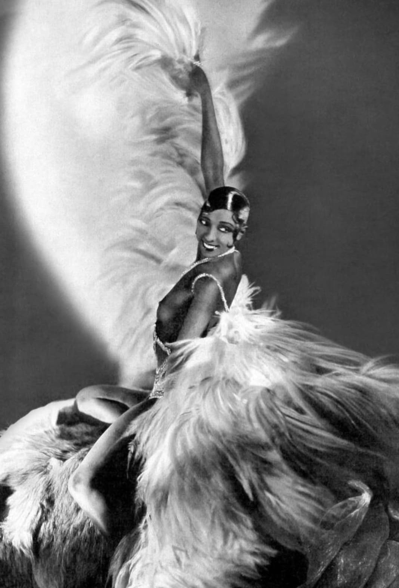

Joséphine Baker est l’une des personnalités les plus marquantes du XXᵉ siècle. Artiste mondialement connue, danseuse, chanteuse et actrice, elle devient une figure emblématique de la liberté et de la modernité. Installée en France dès les années 1920, elle conquiert le public par son énergie, son audace et son style unique, devenant une véritable icône internationale.
Au‑delà de la scène, Joséphine Baker s’engage profondément pour la justice, l’égalité et la fraternité. Sa vie est marquée par un combat constant contre le racisme et par un humanisme rare, qui fera d’elle une figure universelle de paix.
Nom : Freda Josephine McDonald, dite Joséphine Baker
Dates : 3 juin 1906 – 12 avril 1975
Nationalité : Américaine puis Française (1937)
Profession : Danseuse, chanteuse, actrice, meneuse de revue
Lieu emblématique : Château des Milandes (Dordogne)
Née dans une famille pauvre aux États‑Unis, Joséphine Baker débute très jeune dans le spectacle. Elle arrive à Paris en 1925 et devient rapidement une star mondiale grâce à ses performances au théâtre des Champs‑Élysées et au Folies Bergère. Son style, mélange d’humour, de danse et de provocation maîtrisée, révolutionne le music‑hall.
Sa célébrité lui permet de s’imposer comme une figure incontournable de la scène artistique internationale. Elle utilise cette notoriété pour défendre des causes humanistes, notamment la lutte contre les discriminations raciales.
Joséphine Baker dépasse largement le cadre du spectacle. Elle devient un symbole de liberté, d’émancipation et de tolérance. Son engagement pour les droits civiques, son action humanitaire et son influence culturelle font d’elle une figure majeure du XXᵉ siècle.
Après la guerre, elle adopte douze enfants de cultures différentes, formant sa « Tribu Arc‑en‑ciel », un projet unique destiné à prouver que la fraternité entre les peuples est possible. En 2021, elle entre au Panthéon, reconnaissance ultime de son rôle historique et humaniste.